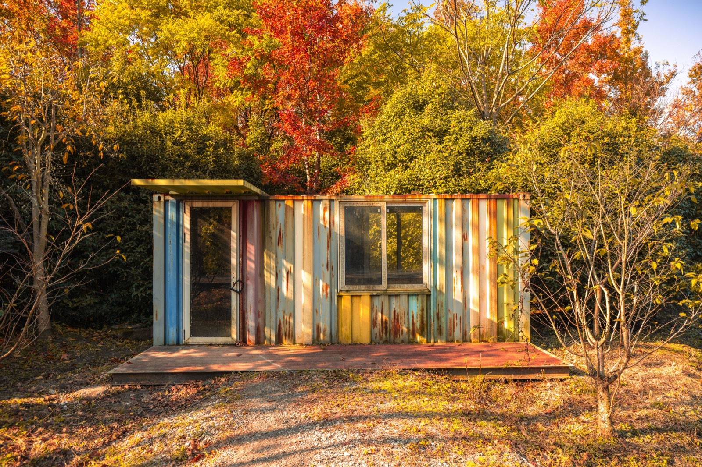

Shipping Container Homes
Steel boxes turned into modern homes — cheaper on paper than you'd think once you finish them properly, and genuinely tricky in tropical heat. The honest breakdown.

A used shipping container costs only a few thousand dollars, which makes container homes look almost free. They aren't. The steel box is cheap; insulating, cladding, cutting openings, plumbing, and cooling it is where the money goes — and in the tropics, a bare metal box is an oven.
How they're built
Standard 20ft or 40ft steel containers are cut for windows/doors, reinforced where steel is removed, insulated (critical), clad, and fitted out. Multiple containers stack or combine for more space. The structure is inherently strong and stackable, and builds can be fast once design and permits are sorted.
What does it cost?
The container: ~$2,000–5,000 each. The finished home: realistically $1,500–3,000/m² ($140–280/sqft) once insulated and fitted — i.e., not dramatically cheaper than a small conventional build, and sometimes more once you account for the extra insulation the tropics demand. (Approximate; varies by finish.)
The trade-offs at a glance
| Factor | Rating | Notes |
|---|---|---|
| Cost | 🟡 | Cheap shell, expensive finish; net = mid |
| Build speed | 🟢 | Fast once designed/permitted |
| Strength | 🟢 | Steel; stackable, strong |
| DIY-friendly | 🟡 | Cutting/reinforcing needs skill |
| Heat/climate fit | 🔴 | Metal = oven without heavy insulation + ventilation |
| Moisture/rust | 🔴 | Humidity + salt air rusts steel; needs treatment |
| Seismic/wind | 🟢 | Strong box, good connections |
| Permitting/finance | 🟡 | Varies; some areas resist, harder to mortgage |
Can you build this in Panama or Costa Rica?
It's done — but tread carefully. The two tropical enemies are heat (a steel box needs serious insulation, ventilation, shading, and a good roof to be livable) and corrosion (humidity and coastal salt air attack steel). Done well, with a ventilated over-roof and proper insulation, container homes work and look striking. Done cheaply, they're hot, sweaty, and rust-prone. Best for small, modern, design-forward builds — not usually the cheapest path to a comfortable family home here.
Thinking about building in Panama or Costa Rica?
SORA is a fixed-price design-build platform for foreign buyers. We build in reinforced concrete by default — and we can talk you through when an alternative method actually makes sense for the tropics. Play with cost live in the 3D configurator.
See real 2026 build costs →Frequently asked questions
Are shipping container homes actually cheap?
The container is cheap (a few thousand dollars), but insulating, cladding, cutting, reinforcing, and fitting it out brings the finished cost close to — sometimes above — a small conventional build, especially in the tropics where heavy insulation is non-negotiable.
Do container homes get too hot in the tropics?
Yes, unless designed for it. Bare steel absorbs heat aggressively. A livable tropical container home needs strong insulation, cross-ventilation, shading, and ideally a separate ventilated roof over the containers.
Do shipping containers rust in humid climates?
They can. Tropical humidity and coastal salt air corrode steel over time, so containers need proper treatment, coatings, and maintenance — a real ongoing consideration near the coast.
Sources & verification
Figures in this guide were checked against primary and authoritative sources on 27 July 2026. Immigration, tax, and cost figures change — always confirm the current rules with the official body or a licensed professional before acting.
- Infurnia — alternative materials for green construction
- MN Property Group — off-site construction trends